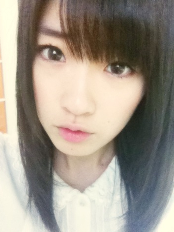

2012/0217Fri（´-`）.｡oO(かずみん×32
今日はちーちゃんの誕生日♪ こんばんは(*^o^*)
コメント数が200を超えました！
嬉しすぎる(T_T)
ありがとうございます(*^^*)
でも暇さえあれば見てるので、
全て読ませてもらってますよ☆.°
ありがとうございます！
ありがたいことに、
メディアにも沢山出させていただいて、
感想も沢山いただいております！
ありがとうございました(*^^*)
まさかのオンタマでのウィンク…
自分きもすぎて笑いました…ハハハ
“失敗は成功の元”
チャンスがある限り、
どんどん成長していきたいです。
-----------------------
数日前にちょっと時間があったので、
一人カラオケに行ってきましたぁ♪(´ε｀
)
スカッとしましたよ！
歌うの大好きです\(//∇//)\
ちなみに歌った曲↓
昭和LOVE!!!!
みなさんは何曲わかりますか(^^)？
ちなみにみなさんの十八番は(
´ ▽ `
)？
-----------------------
あ、昨日発売の
ヤングジャンプさんに
載っています！
初のポニーテール♪(
´θ｀)ノ
撮影は衣装も、セットも可愛くて
楽しかったです(*^◯^*)
AKB新聞さんにも乃木坂46の記事が
載っておりますので、
よかったら見てくださいね(*^^*)
--------------------
今週の土日はOFF!!!
電化製品見にいきたいです(
´ ▽ `
)ﾉ
一眼レフのレンズほしい！
お年玉で買えるかな…
あと、友達とも遊ぶ約束しました(*^^*)
超おもしろい子です(#^.^#)
乃木坂で例えるなら、まあやかな！
まあやはとっても優しい、
とってもひょうきんな子です！！！
性格がそっくり（＾＿＾）☆
楽しみだ～♪(
´θ｀)ノ
デビューに備えて体調も整えて
おこうと思います！
みなさんも、
体調を崩しやすい時期ですので
お身体に充分気をつけて下さいね(>_<)
それでは、おやすみなさい(v_v)zZZ

高山一実
コメント(253)
写メ超かわいい！
最近テレビいっぱいいですね！
オンタマとかもろもろ全部録画でチェックしました！
これからももっと見れると嬉しい＾＾
ヤンジャンも買ったよ！
いや～
いいっすね←
ビバかわいい昭和キャラ！
おやすみ～
かずみんこんばんは^^*
久々のコメント！
オンタマ観たよ～
観た感じ全然違和感なく普通にやれてたと思うよ！
でも、良い経験になってよかったね！^^
ヒトカラ良いなぁ～
自分も前々からやってみたいとは思ってるのですが…
団体客の視線に耐えられない…＞＜
でも、今度は行ってみようと思う！！
ヤンジャンもチェックしたよ～（*´ω｀）
かずみんはやっぱり可愛くて良かったよ～^^*
土日オフなんだ？！
良いレンズが見つかるといいね！！
かずみんこそ、デビュー前で忙しいんだから体調崩さないように気をつけて！！＞＜
でわ～(ｏ^-^)尸
ウィンク、全然キモく無いよ！
ガチでカワユスだった(照)
ヤンジャンも見たけど、ポニーテールLOVEな俺としてはかずみんカワイ過ぎて萌え死した(笑)
同じ千葉県民としてこれからも応援してるゼイ♪
かずみんも体に気をつけてちょ！
ほな、おやすみさん！
( ´∀`)/~~
一実ちゃん、こんばんは。
前回はるなでコメントしましたが、実は私ゴリラなので、これからは"はるゴリ"でいきます(*｀ー´*)
一実ちゃんと共通点たくさんあって嬉しいです。ニヤニヤ。実は私も先日、一眼レフのレンズが欲しくて買いました(笑)
一実ちゃんはどんな写真を撮るんですか？私は人を撮るのが好きなので、シグマの50mmF1.4買いました！人の写真を撮るならば本当に本当にオススメなので、ぜひ見てみてください★ミ
200超えたん!?
それはあれやな､前の
記事から私がコメ
しだしたからやな＼(^^)／
１←貢献してるよ!
私も昭和の曲好きやから
分かるで～(*^^*)
名曲多いやんな♪
｢心の旅｣とか十八番かも(笑)
ちなみに19歳です～｡←
まぁ最後は
AKBからのモ～娘｡やな!
私､乃木坂のメンバーで
１番かずみんが
気合う気がすんねん!
別に根拠はないけど(笑)
大阪で待ってるから^^
早く握手会で語ろな～♪
もう友達の気でいます｡
コメかて２回目のくせに｡爆
次回のヒトカラは､キョンキョン中心でお願いしますヽ(・∀・)ノ
以上､ミポリンファンのかずおJAPANでした(´∀｀)ﾉ
200越えたか～
人気出ても“初心”を忘れちゃ駄目だよ(^^)！
家電製品と言えば…
家電ヲタクになりたい！(笑)
家電ヲタクってめっちゃ便利だよあれ(￣□￣;)
だって詳しくないより詳しい方がいいでしょ？
ちょっと勉強してみよ！
かずみん！はじめまして(*^^*)
最近メディアでよく見て、気になって乃木坂46が出演する番組をたくさんチェックしたよ♪( ´▽｀)
それで、かずみんを推していこうと決めたよ☆
自分がギリギリ昭和生まれなので、昭和好きでいてくれてなんだかうれしいです(*^^*)
デビュー近いから、体調に気をつけてファイトっ♪( ´▽｀)
それでは、また(＾ｰ^)ノ
オンタマ
見逃しちゃったー(；；)
かずみんのウィンク見たかった(>_<)
ヤングジャンプまだ買えてないけど
本屋さんで立ち読みしちゃいました(笑)
ポニーテール似合ってて
凄く可愛いかったよ(*´｀*)
あ、十八番はないなあ、、
ぐるぐるカーテンを十八番に
出来るようにたくさん
歌うね☆～(ゝ。∂)(笑)
おやすみなさいo(^-^)o
かずみんダイスキみさき
ﾔﾝｸﾞｼﾞｬﾝﾌﾟ見た(^O^)/
……やばい
かずみんちょ〜ｾｸｼｰやったよ
いつものかずみんと一味違う一面を見れて嬉しかった〜
AKB新聞も乃木坂特集あるからけっこう買ってるょ
最近、ﾃﾚﾋﾞとか雑誌とか色々と乃木坂見る機会あって毎回楽しみにしてる
収録とかお疲れ様(^-^*)/
ｺﾞﾒﾝ
5曲くらいしかわかんない
一人ｶﾗｵｹどぉだった
俺はｿﾅﾎﾟｹとかよく歌うよ〜
一人だし声高いししんどいけどね（笑
…そっか！
一人暮らし始めるし休日なのに忙しいね
友達とも遊ぶ機会減っちゃうよね
しっかり楽しんできて
でゎでゎ体調には気をつけてまた元気なかずみんを見せてね(ノ＞＜)ノ
最近ｶﾗｵｹ行ってないからｶﾗｵｹが恋しいかぢゅやでした
コメント多くなってきたね
うれしい限りだあああ
これからも毎回コメントするね
なので、ブログはバリバリ書いちゃってくださいね！
ヒトカラ行ったのか。俺も行こうかな
歌った曲の昭和率ｗｗｗさすがだねwwwww
曲とかほとんど名前しか聞いたこと無いね(笑)
十八番か･･･
女声の曲ばっかだからな俺聞くの
大塚愛とかaikoとかAKBとか
あとはハウス系とジブリ･･･
十八番なんてないです(´･ω･)
YJ買ったよ！雑誌は実は立ち読みすることが多いんだけど
これは速攻で買いましたwww
かずみんの「面！」並に早かった(･ω･)ｂ←
PENのレンズ買うのかぁ～
俺も課題やるためにPEN買っただけだからな
レンズが無くて困る･･･
バイト代入ったら行くか
OFF楽しんでね
友達「も」面白い子なんだね。
昨日みたいに雪が降ったりするもんね
お互い体調に気をつけましょう
明日は朝から9時間のバイトだああああ
メレンゲ見れない；ｗ；
かずみん おさしみー
あ、おやすみー
.....嘘です、はい（笑）
かーずみぃぃいいいん、また番号間違えてるよー（笑）
32は前の記事でしょ！ 33だよ、この記事！w
まぁそういうおっちょこちょいなとこも好きなんだけどねぇ～(￣▽￣)
いやウインク神やからマジで
もっと、もっと、も～～～っとお願いします☆*:.｡. o(≧▽≦)o .｡.:*☆
まぁそのポジティブさは好きですけどね( ゜∇゜)
ヒトカラかーい！！
誰か誘えやーい！w ゆーてヒトカラスッキリするよねー、わかる（笑）
.......なんかさっきから俺フォローしてばっかだなww
ヤンジャンはテスト終わったら見にいく～\(//∇//)\
一眼レフかぁー、いいねぇ！！
また撮った写真載せてよ^^ この間の紅葉すっごくよかったし!!
久しぶりの友達との休暇楽しんでねー＼(^o^)／
やっぱり友達は大事にしなきゃね！
おやすみー⊂((・x・))⊃
☆☆☆(なお・ω・やん)☆☆☆
最高の写メをありがとう！ 超可愛い(≧∇≦)
次はウインク写メでお願いしますw←強制で（笑）
コメントの数を数えるのはちょっとびっくりwwでもおめでとう〜
俺はカラオケ一番歌力が出せる曲はバンプの「涙のふるさと」だろう。んんん。。。でもEminemのラップも普通に上手いと思う。いつかかずみんとカラオケに行ったら是非ラップ歌わせてくださーい。
では、おやすみ。
ゆうじ＠カナダ
最近テレビで
よく見ますよー!!
かずみん
風邪引かないでね(汗
歌ってる曲全部わかるわ〜俺も平成生まれのくせに(笑)
昭和歌謡曲は落ち着きあるから良いよね♪
オンタマでウインク？？
あったっけ？
まさか見逃したかな・・・
オンタマにツボっ娘にひるおび見たよ～
もちろんヤンジャンも見た～
今までと違った感じのグラビアだったねぇ
良かったですｗ
AKB新聞は買ったのに見てない事にさっき気付いたｗ
かずみんが歌ったの全部わかる
おっさんだからだろうか・・・ｗ
ちなみに十八番は・・・特にないけど
なぜか女性の曲しか歌えないんだよねぇ～
なぜだろう・・・
2日間の休みで心も体もリフレッシュしてねぇ～
自分20代だけどカラオケで歌った曲全部分かりますｗ
70年代、80年代は良い曲がたくさんありますよね。
週末のOFF満喫してくださいね
２００コメおめでとう！
最初と比べると、コメ伸び率がすごいね（笑）
それだけ知名度上がってきた証拠かな？
オンタマ見れない…(:_;)
悲しい(:_;)
一人カラオケ、やってみたいけど自分抵抗があってなかなかできないです（笑）
まだまだ現役高校生だからね！
歌った曲はだいたいわかるよ！
シャ乱Ｑ俺もよく歌うよ！
歌いやすいというかなんというか…
自腹で一眼レフは羨ましい…
デジカメすら買えない田中です（笑）
質問しちゃうよ！
○剣道二段って言ってたけど、何かの大会で上位に入ったことってある？
○かずみんは自分のひじはよく擦るけど、他人のは余り擦らない？他人から擦られるのはどう？
以上、寝れずに早３時間が経ちました田中でした（笑）
caucasia☆tanaka
ヤンジャン見ました！！かずみん可愛すぎｗ
土日楽しんでね！かずみんも体調管理はしっかりと！！
自分は風邪引きましたｗ
ちはるんおめでとう♪
そして200超えもおめでとう!!
番組しっかり全部チェックしてるよ〜
かずみんのウィンクが可愛すぎて録画したのを一時停止した←
1人カラオケいいね！
かずみんの後に行ったらすぐ分かりそうだ笑
曲はこのくらいなら全部分かるよ〜！
ゆーてギリギリ平成生まれだけどね！
かずみんのシングルベッド聴いてみたいわー(*´∀｀*)
おやすみ貰えて良かったね♪
体力しっかり蓄えてデビューウィークに備えなくちゃだね!!
ではでは今日も1日お疲れ様！
おやすみ〜
カラオケ渋いなぁｗ
ちなみに・・全部知ってるよ！
トシがバレるってかｗ
てか、地鶏やびゃあ！
いや・・素顔も素敵ですｗ
全部歌えるよ～ ← おっさんだからね。笑
HEY!HEY!HEY!での雛壇かずみん良かったよー！
よっ、雛壇アイドル！！ (^o^)
ウタモヨカッタデー
かずみん～(^-^)
テレビや雑誌などを拝見しました(^^)d
何から話をして良いか…(^^;
まずは、HEY ×3は良かったと思います(^-^)
国生さゆりさんとのコラボでバレンタインキッスは
ソロパートも有りましたね(^^)v
ダンスはいつの間に、覚えたの？
出演が決まってから覚えたかな…
オンタマ等のバラエティーは面白かったよ～(^-^)
ヤンジャンのセンターグラビアは、いつもと違う
髪型でしかも…髪をアップにして似合ってたよ
好みだったりする(^-^;
AKB新聞も読みました～
最終ページでMJの時の写真が掲載をしてるですが…
その、かずみんの表情がとても素敵です(TT)
普通に部屋に飾りたうですね～
何だか、こちらまで嬉しくて笑顔に成りますよ(>_<)
今日の一番の話をしたい事ですよ～(^-^)
ブログが更新したら話そうと待ってました(^^;
もう…今日か、２日間のオフを楽しんでくださいね
あ～長くなり、すみません(^^;
では～
楽しんでくださいね(^^)v
こすりん!!
ｶﾗｵｹの履歴
全然わからない(笑)
次会った時、何話せばいいんだろー。
こすりんも体調に気を付けてな!!
最近の曲はあんまりわかんないけど、
かずみんがカラオケで唄った曲は全部歌えるよ〜♪
さすがにカラオケに行ってまでは歌わないけどねf^_^;
シングルベッドは昭和じゃないけど、いい曲だよね〜！
かずみんの歌声をもっともっとみんなに聴かせてほしいです。
週刊ヤングジャンプのポニーテールもすごく可愛かったよ♪
この前共演された国生さんもポニーテールをしてた時期があったけど、
それより前には、かずみんの好きな明菜も10代の頃にポニーテールをしてる時があったなぁ。
まぁ、取り立てて珍しい髪型でもないけどね。
個人的にポニーテールは大好きです。
以前のかずみんのようにもう少し髪を伸ばして、
時々ポニーテール姿も見せたら、
さらにかずみん推しが増えそうな気がします☆
ホントにすごく可愛かったです。
とか言いながら、ポニーテールでもなく、巻き髪でもなく、
今の普段のかずみんの髪型が一番かずみんのイメージなんで、
一番好きなんだけどね！
あ、あと、公式サイトの情報には載ってなかったけど、
週刊プレイボーイにかずみんが出てるって聞いて、
昨日買ってきました〜！
初めて見る瞳を閉じてる写真も魅力的だったし、
かずみんのサインも初めて見ました(@_@)
あぁかずみんのサイン、欲しい。。。（笑）
AKB新聞も買ってきました〜(^O^)/
じゃあ、土日はたっぷり楽しんで、
ゆっくりくつろいでね（ﾟ▽^*）
おやすみなさい（v_v）zzz
出た感じですな〜。たぶん、高山ちゃんならタモリ倶楽部も出れたらそれなりにおやりに
なるでしょうね(＾＾)＼(゜゜)(゜▽゜)にしても、けんだま器用に綺麗に決めたりや
つぼっこでまあ元気にスイッチが入った感じはとーっても高山ちゃんらすぃ感じだったぜよ
(＾＾)＼(゜゜)！(＾＾)！にしても白石さんとさゆりんごって水と油かな〜ってイメージで
やんしたがどっこいそーでもなくーって事でしたなもー。そうそう、少年誌の方もみましたがやー
意外なかずみんのバストにはぶったまげやしたわに〜。脚が綺麗なのは日村さんも食いついて
たから（笑）想定内でしたが〜〜。そーいやーオンタマだと白石さんの所でくるっと変えて見たり
な無邪気ななんかしってる感が面白かったし可愛かったでやんす〜(＃^.^＃)！(＾＾)！
かずみんってオケ一人で行けるんでやんすね〜(∪o∪)。。。(^^ゞにしても今はなき赤坂の
『うたばん』って番組で結構タカさんがひっぱってた曲がずらーっと並んでやんすね〜。
マジなんですな〜〜(∪o∪)。。。＼＾o＾／なんかそういう番組でもあったのかと（笑）
国生さんのバックで踊ってたりも白石さんとの並びで可愛かったのれす(＃^.^＃)！(＾＾)！
画の高山ちゃんも可愛いですにゃー(∪o∪)。。。！(＾＾)！
そうそう最近読んだ本で『中途半端な密室』（著・東川篤哉）がなかなかの面白さで素晴らしかった
です。コメディーって意味で(゜o゜)＼(-_-)(^^ゞ。まあ、オフもご満喫あれですな。ティッシュ配りの時のあのキャラクターもう高山ちゃんな
一面でやんすのね〜〜( ^^)Y☆Y(^^ )！(＾＾)！。うんうん。
ちゃんと見てましたよ～～思わず笑っちゃったけどねｗｗｗ
かずみさんのキャラ凄くいいと思います
今後も貫き通してください
おお、選曲がガチだ 笑！！
夢に向かってファイトです( *｀ω´)
あ、ヤンジャンまだチェックしてない(∵;)
チェックするね～( *｀ω´)
お互い良い休日を過ごせますように！！
デビュー日近づいてきて楽しみ(`ω´)ﾆﾔﾆﾔ
おやすみ(( _ _ ))..zzzZZ
「はなまるマーケットOPEN！」の後に
友近がひじこすってたんだけど、
あれってかずみんの影響？？笑
すごく気になってるので教えてください！
山口百恵の秋桜すきだなぁ(*^o^*)
あとはシングルベッド～も知ってる！
中森明菜のdesignerもいいね(o^∀^o)
ん全部で６曲くらいは知ってるかな？
あとは聞けばわかったりするかも(￣∀￣)笑っ
そしてオンタマでさらにかずみんすきになったわぁ(≧∇≦)←
ちゃんとヤンジャンチェックしますm(_ _)m
それと、剣道！また、消えました(笑)
昭和の曲わからないー(>_<)一実さんすごいっす!!
十八番は、虎舞竜の「ロード」です！渋いっしょ(笑)
後、カラオケ特攻隊長の自分は、ピンクレディーの「UFO」の冒頭部分の振りをして、みんなを笑かします!!←これをしてからじゃなきゃ始まらない!!
オフを有意義に過ごしてね♪
最近ホントたくさん乃木坂をテレビで見る機会が多くてテンション高山!!
でもやっぱ直接会いたいなぁ～
かずみんには3/3の全握で会えるかな
楽しみにしてるね
高山さんより
年齢的には２個上だけど
ﾀﾒに感じるのは
なぜだか嬉しいよ(￣ー￣)ﾜﾗ
高山さんと
同じ誕生日とか照れる(笑)★
２月８日はニヤニヤが止まりません←ダジャレ…かな!?
ニヤニヤで思い出したけど
高山さんの笑い方って
特徴あるよね(^_^)
例えるなら…
さんま＋ﾋﾞｰﾄ武－ﾋﾞｰﾄ武
結局…明石家さんまっぽいよねってこと(￣ω￣)笑
さて冗談は置いといて…
高山さんって
ニックネーム「かずみん」だよね??
最近、興味を持ったんで…
ニックネームあると思うけど
自分は「高山さん」と呼び続けるから(☆o☆)(笑)
カラオケの十八番は
DREAMS COME TRUEさんの
「うれしい!たのしい!大好き!」です。Max98点出しました(￣ー￣)自慢してすいません★
では以上
千葉の大学２年ラグビー部の
(☆o☆)たくびーでした。
昭和の曲いいですよね。
とても共感します。
自分の十八番は特にないんですけど(:_;)
頑張って作りますo(^-^)o
調べてみたら、千葉県出身の同い年だったのでびっくりしました。
これからも応援するので頑張ってください。
栃木の医大生です。
乃木坂ができたころから、かずみん推しです！
昭和は僕も大好きで、カラオケ行くとよく歌います。
中村雅俊とか、内山田洋とクールファイブとか。
十八番は村下孝三の「踊り子」！知ってる？
一眼はいいですねー。僕はNikonD3100持ってます！
同じくレンズ買い足したい…
パンケーキがほしい。かずみんは何のレンズがほしいの？
いつも応援してます！またコメントします(^^)
昨日はソニービルでPVを見て来ました。やっぱり大画面で見ると迫力があって素晴らしかったしかも平日の昼間でガラガラだったので、乃木家のみなさんを俺がひとりじめですよ(笑)
山口百恵を熱く語る、かずみんに思わず笑ってしまいました(笑)
そうそう、ヤンジャンのグラビア予想外の…
ポニーテールめちゃくちゃ可愛いかったよ(*^o^*)
では、本日も素敵な一日を
19歳だけど、カラオケ思ったより知ってる曲あった！
しかもシングルベッド歌ったことある
ってか１人カラオケ行ったことないんだよね～
楽しそう！！！
ストレス発散できそうだ～
そういえばオンタマ愛知で放送されなかった～
だがしかし、いつか見る！
では深夜にコメ失礼しました～
ごめん、かずみんが歌った曲３曲しか分からなかったわ(；・∀・)
勉強しときます。。。
ボクはカラオケ行くと「残酷な天使のテーゼ」をいつも歌うよヾ(*´∀｀*)ﾉ
久しぶりのOFFだと思うからこの二日間のOFFは楽しんでね♪♪
それじゃ(´∀｀*)ﾉｼ
☆ハル☆
どーもです☆しょーきです。
一実さんお疲れ様！
最近一実さんよく見れるから
嬉しくてにやにやします(^O^)
どん引きするとか
もちろん承知だぜよ(・∀・)ｷﾗｯ
俺も今日カラオケ行ったよ＼(^O^)／
あまりの下手さに病んだけど（笑）
もう歌うより
聞く専門で行きます(´;ω;｀)←
シングルベッドも歌ったけど
９０点なかった（涙）
ヤンジャンまだ買ってない((((;゜д゜))))
明日買いまする。
任せろの極み！
電化製品好きとはまた気が合う←
ジョー○シンやミド○リ電化
(伏せ字失敗)
に行ったら気付いたら２時間くらい
経ってる廃人です（笑）
見下してください（泣）
体調の心配ありがとうございまする。
弟はインフルですが
俺にかかる気配は０です（笑）
一実さんも気をつけて!!
じゃあおやすみなさい＼(^O^)／
大阪の個別楽しみにしてます！
まだまだやけど（笑）
(しょ・ω・ーき)
更新お疲れ様です！
メディアで見られる機会が増えて嬉しい限りです！
ほんとかずみんかわいい(^^)！
ヤンジャンのかずみんは特にかわいい(＾＾)
かずみん見てると元気出るから不思議だよねー♪
自分も昔の曲は割と詳しいのでカラオケの曲、ほとんどわかりますよ！
シングルベッド良いよね！
かずみんが歌うやつ聞いてみたい！
この間かずみんの影響で｢絶対絶命｣歌ったよ♪
あと山口百恵さんの｢謝肉祭｣って曲知ってる？
土日オフ十分満喫して、リフレッシュしてくださいね(^^)
かずみんも体調には気をつけてください！
自分はいま、長野にスキー旅行に来てるよ！
めっちゃ寒いー(>_<)
自分も体調には気をつけまーす♪
ゆっくり休んでね＼＾o＾／
コメ200突破
おめでとう
頑張っている証拠ですね
赤いスイートピー
ぐらいしか
分かんないや
かずみんと
同い年なのに…orz
コメ200おめでとう☆
最近テレビ多いのは嬉しい…
けど！体調心配だよね(>_<)
デビュー前だし仕方ないけど
無理しないでね？
オンタマでもウインクだと⁉
見逃したけど録画してあるから
あとでニヤニヤしながら見よ
19だがだいたい分かるっていうね
昔の歌知ってすぎてお前いくつだよ！
っていつも言われますww
ヤンジャンまだ見てないんだよね
乃木坂載ってるのは全部見てるのに
ちゃんと見るからね＼(^o^)／
うぅーかずみん可愛いよ！
かずみん大人っぽいんだよなー
うん！可愛い(≧▽≦)
更新ありがとうぉぉぉ
コメント200超えて良かったね
やっぱりコメント数気になる？
EX大衆の記事みたよぉぉぉ(*/ω＼*)
胸のあたりをトントンてどういうのだろ？
握手会で教えてね！
週末はお休みなんだね
リフレッシュして来週のデビューで爆発してください
カラオケの曲、全部分かるよ＼(^ー^)／
昭和リアルタイムだし(*´ω｀*)
今日も頑張ろうね
めっちゃはやく見たい！
カラオケ楽しいですよね！
20曲ぐらいですか？
僕ははやくぐるぐるカーテンが
カラオケで歌いたいです。
どれも知らん曲ばかりやぁ...
あ！本見たよ♪
可愛すぎるわ！！！！
つうくん★
かずみんのポニーテールかわいかった＼(^o^)／！！
似合ってるううううう
これからもポニテしてくださいな(￣^￣)ゞ
これで三回目くらいのコメントになります。ひでしゃんっていいます。
年がばれて恥ずかしいのでほんとは言いたくなかったんだけど俺はかずみんが大好きな山口百恵さんをリアルタイムで知っています。
当時ズバ抜けた凄いアイドルでした。百恵さんをリアルタイムで知らないかずみんのような若い子が今だに夢中になるような伝説のアイドルですね。
そんな伝説を目撃できた俺は幸せ者です。
と、同時に「乃木坂46」というこれから伝説になるであろうアイドルグループをこうしてデビュー前から応援できる歓びを最近噛みしめています。
乃木坂伝説の目撃者にさせていただます！
来週のデビューにむけて2日間しっかり充電してちょうだい！
感謝、感激、雨あられ、うちらは乃木坂、上り坂の～ファン！ひでしゃんでした(^O^)／
かずみんのウィンク見たかった〜
ｵﾌよかったね〜
やりたいこと
全部出来るといいね〜
あと、いつも気遣いの言葉ありがとう
かずみんもデビュー直前
体調崩さないでね
またね(*・ｘ・)ノ~~~♪
お疲れさま
今週は、多くのメディアで活躍する姿が拝見でき
大変嬉しく思いました。
一人カラオケの楽曲ですが、全て知っていますし
百恵さんは神曲ですから、それぞれ、思い入れがあります。
聖子さんは「瞳はダイアモンド」で、女性ファンを獲得し
今でも愛されていますね。
わたしは、明菜ちゃんと同学年ですので、大活躍が誇り
に思います。
これからも、百恵さん、聖子さん、明菜ちゃんの楽曲
唄い続けてくださいね。
さて、デビューが近づいてきましたね。
百恵さんの「夢先案内人」でたとえるなら・・・
太陽（一実）が今 たくさんの雲（ファン）したがえて
きらめきながら 昇ってゆきます
そんな そんな 夢をみました
こんな、感じですか。
これからも、わたしたちファンを照らし、幸せをあたえる
太陽となってくださいね。
えりひかダディ


{kind=link}
{kind=link}
そんなときはゆっくりアイスでも食べて休むべきやな